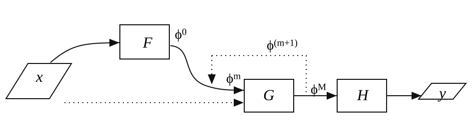
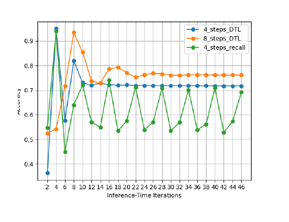
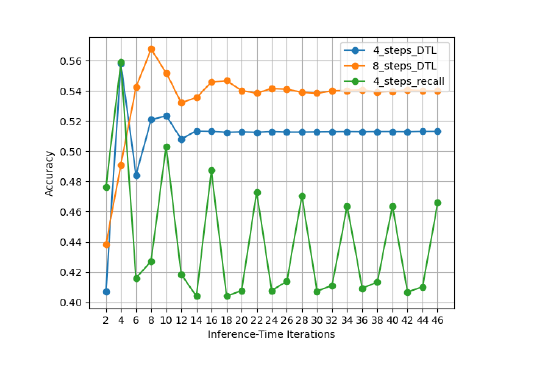

CLEVR Visual Question Answering (MAC-DTL)
Project Overview
This research project explored whether Deep Thinking style recurrent reasoning can improve extrapolation in visual question answering. Deep Thinking introduces inference-time adaptive computation: simple questions can stop with fewer reasoning steps for efficiency, while harder compositional questions can use additional iterations to improve accuracy. The project combines this idea with the modular MAC network, creating MAC-DTL for controlled experiments on CLEVR, CLEVR-Human, and a custom CLEVR-Hard question set.
Dataset example

Technical Approach
The model keeps MAC's Control, Read, and Write reasoning units, but adapts them into a recurrent function that can be reused across inference steps. A frozen ResNet101 image encoder and learnable BiLSTM question encoder provide the visual and language representations, while spectral normalisation is applied to linear layers to encourage 1-Lipschitz-style stability during extended reasoning.
- Compared original MAC, MAC-DT, MAC-DTL, 4-step and 8-step variants, and a step-specific Control Unit variant.
- Evaluated both standard accuracy and prediction entropy to measure confidence under longer inference loops.
- Analysed extrapolation using CLEVR-Human, short-to-long question splits, and manually designed CLEVR-Hard questions.

Spectral normalization as Lipschitz constraint
The Lipschitz constraint is implemented through spectral normalization. By rescaling linear weights with their largest singular value, the recurrent update is kept closer to a non-expansive mapping.
This reduces the chance that additional inference-time reasoning steps amplify small changes in the hidden representation.
Original MAC baseline

Results Evaluation

CLEVR validation

CLEVR-Human transfer

Findings
Stability is the central gain
MAC-DTL showed that Deep Thinking and MAC are architecturally compatible, especially when spectral normalisation is used to reduce unstable memory updates. The strongest benefit was not peak accuracy, but improved stability across extended inference.
Distribution shift remains visible
Lipschitz-constrained variants maintained usable trajectories over a wider range of reasoning steps, but prediction entropy rose beyond the training configuration. CLEVR-Human also showed that phrasing and syntax shift still reduce reliability even after unseen words are filtered.
Failure modes are interpretable
Error analysis found no cross-category mistakes, suggesting the model usually identified the answer type correctly. Remaining counting errors were mostly off-by-one cases from occlusion and object-boundary ambiguity, while extended reasoning shifted more failures toward yes/no judgment.

Takeaway
The project frames MAC-DTL as a lightweight and interpretable alternative to large end-to-end transformer VQA systems. It balances training efficiency, modular reasoning, and stability analysis, while also showing that extrapolation in VQA needs more careful definitions than simply increasing reasoning depth.